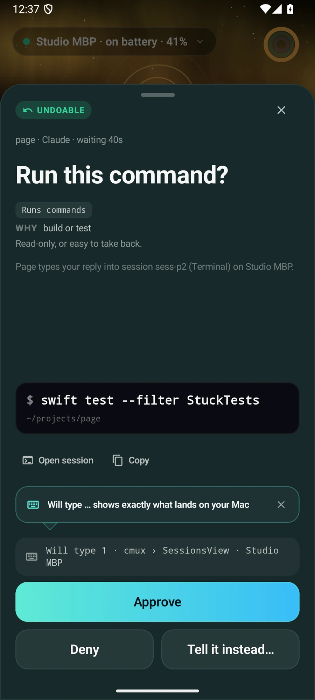
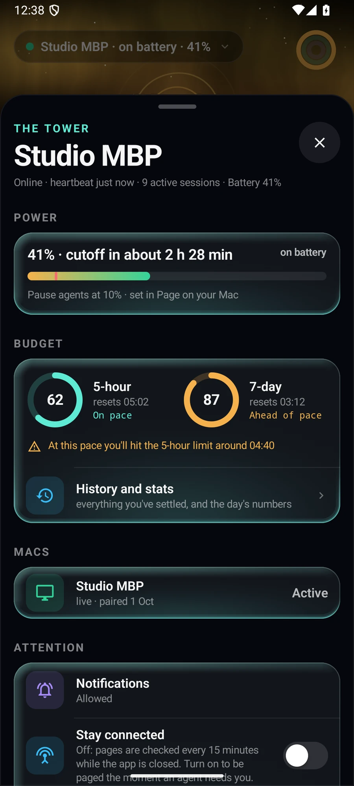

Android
Android, too.
The same pages, live sessions and Night Watch design, built natively with Jetpack Compose. Pair it by scanning the code on your Mac.



The same pages, live sessions and Night Watch design, built natively with Jetpack Compose. Pair it by scanning the code on your Mac.

